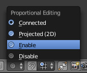
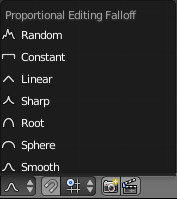
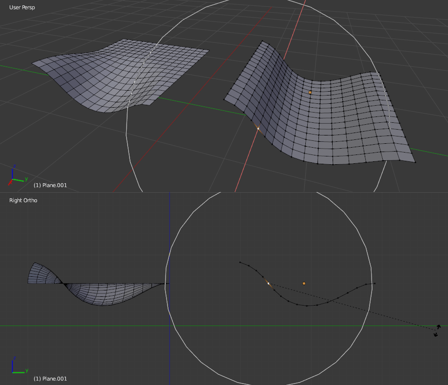
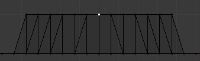
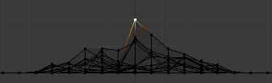
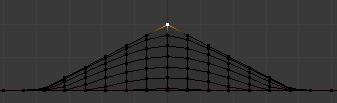
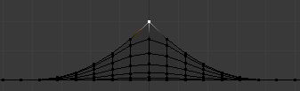
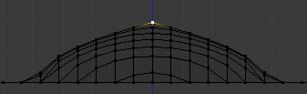
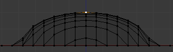
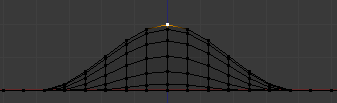

比例化编辑¶
比例编辑是一种变换选定的元素（如顶点）同时能够将变换影响其他附近的元素的编辑方式。例如，有一个顶点的运动也影响到在给定范围内选定顶点的运动。未选中的顶点离这个选中顶点近的将比那些离它远的点要移动得更多（即他们将相对于选定的元素的位置比例化的衰减移动）。由于比例编辑影响到附近的几何体，当你需要在非常细分的网格上进行平滑变形的编辑是非常有用的。
注解
雕刻
Blender also has Sculpting that contains brushes and tools for proportionally editing a mesh without seeing the individual vertices.
Object Mode¶
参考
 icon in the header indicated by the yellow square in the below image.
icon in the header indicated by the yellow square in the below image.OProportional editing is typically used in Edit Mode, however, it can also be used in Object Mode. In Object Mode the tool works on entire objects rather than individual mesh components. In the image below, the green cube is the active Object, while the red and blue cubes are located within the proportional edit tool’s radius of influence. When the green cube is moved to the right, the other two cubes follow the movement.
Proportional editing in Object Mode.
Edit Mode¶
参考
 highlighted icon
highlighted iconO, Alt-O, Shift-O当使用密集的几何结构，比例化编辑可以轻易的做出调整在模型的表面的顶点，微妙的做出可见肿块和皱纹。当你面对这样的情况时，比例编辑工具可以用于平滑变形模型的表面。通过该工具自动修正在给定的范围内的未选定顶点。
Proportional editing in Edit Mode.
影响¶
You can increase or decrease the radius of the proportional editing influence with the mouse
wheel WheelUp, WheelDown or PageUp, PageDown
respectively. As you change the radius,
the points surrounding your selection will adjust their positions accordingly.
影响圈。
选项¶

比例的编辑工具。 |

衰减菜单。 |
{kind=link}
{kind=link}
比例编辑 模式菜单位于 3D 视图 菜单栏中。
- Disable
O,Alt-O 比例的编辑是关闭，只有所选的顶点都会受到影响。
- Enable
O,Alt-O 受影响比所选顶点的顶点，定义半径范围内。
- 投射 (2D)
应用半径时，就会忽略视图沿深度。
经常和投影 (2D) 比例选项 (右) 的区别。
- Connected
Alt-O - Rather than using a radius only, the proportional falloff spreads via connected geometry. This means that you can proportionally edit the vertices in a finger of a hand without affecting the other fingers. While the other vertices are physically close (in 3D space), they are far away following the topological edge connections of the mesh. The icon will have a gray center when Connected is active. This mode is only available in Edit Mode.
- 衰减
- While editing, you can change the curve profile used by either using the
submenu, using the header icon Falloff menu,
or by pressing
Shift-Oto toggle between the various options.
{kind=link}

常量衰减 |

随机化衰减 |

线性衰减 |

尖锐衰减 |

根部衰减 |

球形化 |

平滑衰减 |
{kind=link}
{kind=link}
{kind=link}
{kind=link}
{kind=link}
{kind=link}
{kind=link}
示例¶
Switch to a front view Numpad1 and activate the grab tool with G.
As you drag the point upwards, notice how nearby vertices are dragged along with it.
When you are satisfied with the placement, click LMB to fix the position.
If you are not satisfied,
cancel the operation and revert your mesh to the way it looked before with
RMB, Esc.
You can use the proportional editing tool to produce great effects with the scaling
S and rotation R tools,
as Fig. 通过比例编辑获得的景观。 shows.
通过比例编辑获得的景观。
Combine these techniques with vertex painting to create fantastic landscapes. The Fig. 最终渲染大地场景 below shows the results of proportional editing after the application of textures and lighting.
{kind=link}